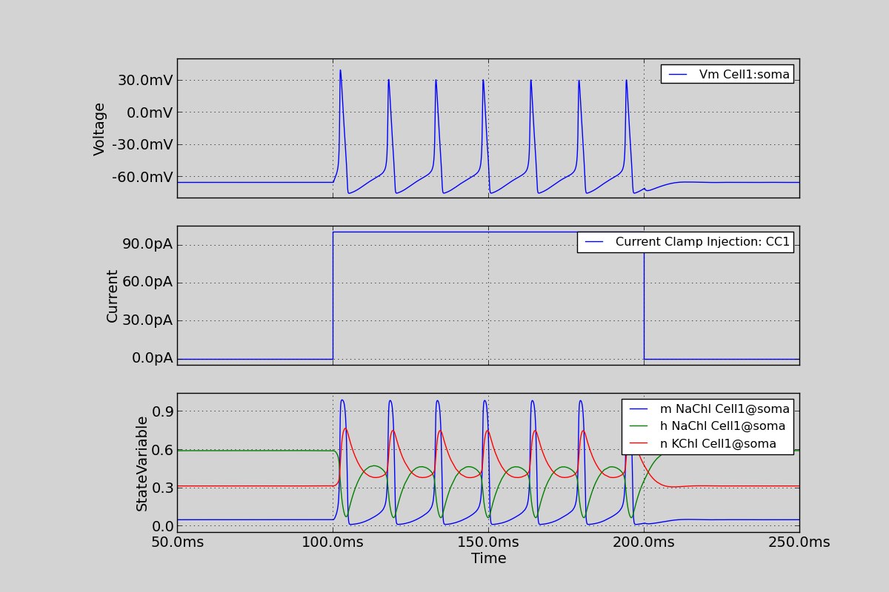

19. Simulation of a HodgkinHuxley-type neuron specified through NeuroUnits
Simulation of a HodgkinHuxley-type neuron specified through NeuroUnits.
Code
import matplotlib as mpl
mpl.rcParams['font.size'] = 14
from morphforge.stdimports import *
from morphforgecontrib.stdimports import *
eqnset_txt_na = """
define_component hh_na {
i = g * (v-erev) * m**3*h
m_inf = m_alpha_rate / (m_alpha_rate + m_beta_rate)
m_tau = 1.0 / (m_alpha_rate + m_beta_rate)
m' = (m_inf-m) / m_tau
h_inf = h_alpha_rate / (h_alpha_rate + h_beta_rate)
h_tau = 1.0 / (h_alpha_rate + h_beta_rate)
h' = (h_inf-h) / h_tau
StdFormAB(V, a1, a2, a3, a4, a5) = (a1+a2*V)/(a3+std.math.exp((V+a4)/a5))
m_alpha_rate = StdFormAB(V=v, a1=m_a1, a2=m_a2, a3=m_a3, a4=m_a4, a5=m_a5)
m_beta_rate = StdFormAB(V=v, a1=m_b1, a2=m_b2, a3=m_b3, a4=m_b4, a5=m_b5)
h_alpha_rate = StdFormAB(V=v, a1=h_a1, a2=h_a2, a3=h_a3, a4=h_a4, a5=h_a5)
h_beta_rate = StdFormAB(V=v, a1=h_b1, a2=h_b2, a3=h_b3, a4=h_b4, a5=h_b5)
m_a1={-4.00 ms-1}; m_a2={-0.10 mV-1 ms-1}; m_a3={-1.00}; m_a4={40.00 mV}; m_a5={-10.00 mV};
m_b1={ 4.00 ms-1}; m_b2={ 0.00 mV-1 ms-1}; m_b3={ 0.00}; m_b4={65.00 mV}; m_b5={ 18.00 mV};
h_a1={ 0.07 ms-1}; h_a2={ 0.00 mV-1 ms-1}; h_a3={ 0.00}; h_a4={65.00 mV}; h_a5={ 20.00 mV};
h_b1={ 1.00 ms-1}; h_b2={ 0.00 mV-1 ms-1}; h_b3={ 1.00}; h_b4={35.00 mV}; h_b5={-10.00 mV};
erev = 50.0mV;
<=> PARAMETER g:(S/m2)
<=> OUTPUT i:(A/m2) METADATA {"mf":{"role":"TRANSMEMBRANECURRENT"} }
<=> INPUT v: V METADATA {"mf":{"role":"MEMBRANEVOLTAGE"} }
} """
eqnset_txt_k = """
define_component hh_k {
i = g * (v-erev) * n*n*n*n
n_inf = n_alpha_rate / (n_alpha_rate + n_beta_rate)
n_tau = 1.0 / (n_alpha_rate + n_beta_rate)
n' = (n_inf-n) / n_tau
StdFormAB(V, a1, a2, a3, a4, a5) = (a1 + a2*V)/(a3+std.math.exp((V+a4)/a5))
n_alpha_rate = StdFormAB(V=v, a1=n_a1, a2=n_a2, a3=n_a3, a4=n_a4, a5=n_a5)
n_beta_rate = StdFormAB(V=v, a1=n_b1, a2=n_b2, a3=n_b3, a4=n_b4, a5=n_b5)
n_a1={-0.55 ms-1}; n_a2={-0.01 mV-1 ms-1}; n_a3={-1.00}; n_a4={55.00 mV}; n_a5={-10.00 mV}
n_b1={0.125 ms-1}; n_b2={ 0.00 mV-1 ms-1}; n_b3={ 0.00}; n_b4={65.00 mV}; n_b5={ 80.00 mV}
g = {36.0mS/cm2}
erev = {-77.0mV}
<=> OUTPUT i:(A/m2) METADATA {"mf":{"role":"TRANSMEMBRANECURRENT"} }
<=> INPUT v: V METADATA {"mf":{"role":"MEMBRANEVOLTAGE"} }
} """
eqnset_txt_lk = """
define_component hh_lk {
i = {0.3mS/cm2} * (v- {-54.3mV})
<=> OUTPUT i:(A/m2) METADATA {"mf":{"role":"TRANSMEMBRANECURRENT"} }
<=> INPUT v: V METADATA {"mf":{"role":"MEMBRANEVOLTAGE"} }
} """
env = NEURONEnvironment()
sim = env.Simulation()
# Create a cell:
morph_dict = {'root': {'length': 18.8, 'diam': 18.8, 'id':'soma'} }
my_morph = MorphologyTree.fromDictionary(morph_dict)
cell = sim.create_cell(name="Cell1", morphology=my_morph)
#soma = cell.get_location("soma")
# Setup passive channels:
cell.set_passive( PassiveProperty.SpecificCapacitance, qty('1.0:uF/cm2'))
# Setup active channels:
na_chl = env.Channel(NeuroUnitEqnsetMechanism, name="NaChl", eqnset=eqnset_txt_na,
default_parameters={"g":qty("120:mS/cm2")}, )
k_chl = env.Channel(NeuroUnitEqnsetMechanism, name="KChl", eqnset=eqnset_txt_k, )
lk_chl = env.Channel(NeuroUnitEqnsetMechanism, name="LKChl", eqnset=eqnset_txt_lk, )
cell.apply_channel( na_chl)
cell.apply_channel( lk_chl)
cell.apply_channel( k_chl)
# Define what to record:
sim.record(cell, what=StandardTags.Voltage, name="SomaVoltage", cell_location = cell.soma)
sim.record(na_chl, what='m', cell_location=cell.soma, user_tags=[StandardTags.StateVariable])
sim.record(na_chl, what='h', cell_location=cell.soma, user_tags=[StandardTags.StateVariable])
sim.record(k_chl, what='n', cell_location=cell.soma, user_tags=[StandardTags.StateVariable])
# Create the stimulus and record the injected current:
cc = sim.create_currentclamp(name="CC1", amp=qty("100:pA"), dur=qty("100:ms"), delay=qty("100:ms"), cell_location=cell.soma)
sim.record(cc, what=StandardTags.Current)
# run the simulation
results = sim.run()
TagViewer(results, timerange=(50, 250)*units.ms, show=True)
Figures

Download Figure
{kind=link}
Output
No handlers could be found for logger "neurounits"
Openning ScriptFlags
/auto/homes/mh735/hw/NeuroUnits/ext_deps
Loading StdLib file: /auto/homes/mh735/hw/NeuroUnits/src/neurounits/../stdlib/stdlib.eqn
CHECKING
<Parameter [id:69759184] Symbol: 'g' >
g
iii 1.0 s**3*A**2/(kg*m**4) <class 'quantities.quantity.Quantity'>
iiii 1200.0 s**3*A**2/(kg*m**4) <class 'quantities.quantity.Quantity'>
OK
Output <StateVariable [id:69746000] Symbol: 'h' >
None
Output <StateVariable [id:69745168] Symbol: 'm' >
None
Output <AssignedVariable [id:69751376] Symbol: 'h_alpha_rate' >
None
Output <AssignedVariable [id:69751184] Symbol: 'h_beta_rate' >
None
Output <AssignedVariable [id:69754256] Symbol: 'h_inf' >
None
Output <AssignedVariable [id:69743760] Symbol: 'h_tau' >
None
Output <AssignedVariable [id:69754640] Symbol: 'i' >
{u'mf': {u'role': u'TRANSMEMBRANECURRENT'}}
Output <AssignedVariable [id:69752528] Symbol: 'm_alpha_rate' >
None
Output <AssignedVariable [id:69754832] Symbol: 'm_beta_rate' >
None
Output <AssignedVariable [id:69743056] Symbol: 'm_inf' >
None
Output <AssignedVariable [id:69750992] Symbol: 'm_tau' >
None
input <SuppliedValue [id:69759632] Symbol: 'v' >
{u'mf': {u'role': u'MEMBRANEVOLTAGE'}}
T [<class 'neurounits.ast.astobjects.SymbolicConstant'>, <class 'neurounits.ast.astobjects.SymbolicConstant'>, <class 'neurounits.ast.astobjects.SymbolicConstant'>, <class 'neurounits.ast.astobjects.SymbolicConstant'>, <class 'neurounits.ast.astobjects.SymbolicConstant'>, <class 'neurounits.ast.astobjects.SuppliedValue'>]
v <class 'neurounits.ast.astobjects.SuppliedValue'>
h_alpha_rate <class 'neurounits.ast.astobjects.AssignedVariable'>
h_alpha_rate <class 'neurounits.ast.astobjects.AssignedVariable'>
h_beta_rate <class 'neurounits.ast.astobjects.AssignedVariable'>
m_alpha_rate <class 'neurounits.ast.astobjects.AssignedVariable'>
m_beta_rate <class 'neurounits.ast.astobjects.AssignedVariable'>
T [<class 'neurounits.ast.astobjects.SymbolicConstant'>, <class 'neurounits.ast.astobjects.SymbolicConstant'>, <class 'neurounits.ast.astobjects.SymbolicConstant'>, <class 'neurounits.ast.astobjects.SymbolicConstant'>, <class 'neurounits.ast.astobjects.SymbolicConstant'>, <class 'neurounits.ast.astobjects.SuppliedValue'>]
v <class 'neurounits.ast.astobjects.SuppliedValue'>
h_alpha_rate <class 'neurounits.ast.astobjects.AssignedVariable'>
h_beta_rate <class 'neurounits.ast.astobjects.AssignedVariable'>
T [<class 'neurounits.ast.astobjects.SymbolicConstant'>, <class 'neurounits.ast.astobjects.SymbolicConstant'>, <class 'neurounits.ast.astobjects.SymbolicConstant'>, <class 'neurounits.ast.astobjects.SymbolicConstant'>, <class 'neurounits.ast.astobjects.SymbolicConstant'>, <class 'neurounits.ast.astobjects.SuppliedValue'>]
v <class 'neurounits.ast.astobjects.SuppliedValue'>
m_alpha_rate <class 'neurounits.ast.astobjects.AssignedVariable'>
m_alpha_rate <class 'neurounits.ast.astobjects.AssignedVariable'>
m_beta_rate <class 'neurounits.ast.astobjects.AssignedVariable'>
T [<class 'neurounits.ast.astobjects.SymbolicConstant'>, <class 'neurounits.ast.astobjects.SymbolicConstant'>, <class 'neurounits.ast.astobjects.SymbolicConstant'>, <class 'neurounits.ast.astobjects.SymbolicConstant'>, <class 'neurounits.ast.astobjects.SymbolicConstant'>, <class 'neurounits.ast.astobjects.SuppliedValue'>]
v <class 'neurounits.ast.astobjects.SuppliedValue'>
g <class 'neurounits.ast.astobjects.Parameter'>
v <class 'neurounits.ast.astobjects.SuppliedValue'>
m <class 'neurounits.ast.astobjects.StateVariable'>
h <class 'neurounits.ast.astobjects.StateVariable'>
Writing assignment for: <EqnAssignmentByRegime [id:69751504] Symbol: h_alpha_rate >
T [<class 'neurounits.ast.astobjects.SymbolicConstant'>, <class 'neurounits.ast.astobjects.SymbolicConstant'>, <class 'neurounits.ast.astobjects.SymbolicConstant'>, <class 'neurounits.ast.astobjects.SymbolicConstant'>, <class 'neurounits.ast.astobjects.SymbolicConstant'>, <class 'neurounits.ast.astobjects.SuppliedValue'>]
v <class 'neurounits.ast.astobjects.SuppliedValue'>
Writing assignment for: <EqnAssignmentByRegime [id:69751312] Symbol: h_beta_rate >
T [<class 'neurounits.ast.astobjects.SymbolicConstant'>, <class 'neurounits.ast.astobjects.SymbolicConstant'>, <class 'neurounits.ast.astobjects.SymbolicConstant'>, <class 'neurounits.ast.astobjects.SymbolicConstant'>, <class 'neurounits.ast.astobjects.SymbolicConstant'>, <class 'neurounits.ast.astobjects.SuppliedValue'>]
v <class 'neurounits.ast.astobjects.SuppliedValue'>
Writing assignment for: <EqnAssignmentByRegime [id:69745104] Symbol: h_tau >
h_alpha_rate <class 'neurounits.ast.astobjects.AssignedVariable'>
h_beta_rate <class 'neurounits.ast.astobjects.AssignedVariable'>
Writing assignment for: <EqnAssignmentByRegime [id:69752656] Symbol: m_alpha_rate >
T [<class 'neurounits.ast.astobjects.SymbolicConstant'>, <class 'neurounits.ast.astobjects.SymbolicConstant'>, <class 'neurounits.ast.astobjects.SymbolicConstant'>, <class 'neurounits.ast.astobjects.SymbolicConstant'>, <class 'neurounits.ast.astobjects.SymbolicConstant'>, <class 'neurounits.ast.astobjects.SuppliedValue'>]
v <class 'neurounits.ast.astobjects.SuppliedValue'>
Writing assignment for: <EqnAssignmentByRegime [id:69759120] Symbol: m_beta_rate >
T [<class 'neurounits.ast.astobjects.SymbolicConstant'>, <class 'neurounits.ast.astobjects.SymbolicConstant'>, <class 'neurounits.ast.astobjects.SymbolicConstant'>, <class 'neurounits.ast.astobjects.SymbolicConstant'>, <class 'neurounits.ast.astobjects.SymbolicConstant'>, <class 'neurounits.ast.astobjects.SuppliedValue'>]
v <class 'neurounits.ast.astobjects.SuppliedValue'>
Writing assignment for: <EqnAssignmentByRegime [id:69744272] Symbol: m_inf >
m_alpha_rate <class 'neurounits.ast.astobjects.AssignedVariable'>
m_alpha_rate <class 'neurounits.ast.astobjects.AssignedVariable'>
m_beta_rate <class 'neurounits.ast.astobjects.AssignedVariable'>
Writing assignment for: <EqnAssignmentByRegime [id:69754768] Symbol: i >
g <class 'neurounits.ast.astobjects.Parameter'>
v <class 'neurounits.ast.astobjects.SuppliedValue'>
m <class 'neurounits.ast.astobjects.StateVariable'>
h <class 'neurounits.ast.astobjects.StateVariable'>
Writing assignment for: <EqnAssignmentByRegime [id:69751120] Symbol: m_tau >
m_alpha_rate <class 'neurounits.ast.astobjects.AssignedVariable'>
m_beta_rate <class 'neurounits.ast.astobjects.AssignedVariable'>
Writing assignment for: <EqnAssignmentByRegime [id:69754384] Symbol: h_inf >
h_alpha_rate <class 'neurounits.ast.astobjects.AssignedVariable'>
h_alpha_rate <class 'neurounits.ast.astobjects.AssignedVariable'>
h_beta_rate <class 'neurounits.ast.astobjects.AssignedVariable'>
m_inf <class 'neurounits.ast.astobjects.AssignedVariable'>
m <class 'neurounits.ast.astobjects.StateVariable'>
m_tau <class 'neurounits.ast.astobjects.AssignedVariable'>
h_inf <class 'neurounits.ast.astobjects.AssignedVariable'>
h <class 'neurounits.ast.astobjects.StateVariable'>
h_tau <class 'neurounits.ast.astobjects.AssignedVariable'>
__exp__
x <class 'neurounits.ast.astobjects.FunctionDefParameter'>
a1 <class 'neurounits.ast.astobjects.FunctionDefParameter'>
a2 <class 'neurounits.ast.astobjects.FunctionDefParameter'>
V <class 'neurounits.ast.astobjects.FunctionDefParameter'>
a3 <class 'neurounits.ast.astobjects.FunctionDefParameter'>
T [<class 'neurounits.ast.astobjects.DivOp'>]
V <class 'neurounits.ast.astobjects.FunctionDefParameter'>
a4 <class 'neurounits.ast.astobjects.FunctionDefParameter'>
a5 <class 'neurounits.ast.astobjects.FunctionDefParameter'>
Output <StateVariable [id:69834576] Symbol: 'n' >
None
Output <AssignedVariable [id:69835216] Symbol: 'i' >
{u'mf': {u'role': u'TRANSMEMBRANECURRENT'}}
Output <AssignedVariable [id:69833360] Symbol: 'n_alpha_rate' >
None
Output <AssignedVariable [id:70971600] Symbol: 'n_beta_rate' >
None
Output <AssignedVariable [id:69834704] Symbol: 'n_inf' >
None
Output <AssignedVariable [id:69836560] Symbol: 'n_tau' >
None
input <SuppliedValue [id:70971792] Symbol: 'v' >
{u'mf': {u'role': u'MEMBRANEVOLTAGE'}}
v <class 'neurounits.ast.astobjects.SuppliedValue'>
n <class 'neurounits.ast.astobjects.StateVariable'>
n <class 'neurounits.ast.astobjects.StateVariable'>
n <class 'neurounits.ast.astobjects.StateVariable'>
2013-10-19 15:41:35,151 - morphforge.core.logmgr - INFO - Logger Started OK
2013-10-19 15:41:35,151 - DISABLEDLOGGING - INFO - _run_spawn() [Pickling Sim]
No handlers could be found for logger "neurounits"
2013-10-19 15:41:36,829 - morphforge.core.logmgr - INFO - Logger Started OK
2013-10-19 15:41:36,829 - DISABLEDLOGGING - INFO - Ensuring Modfile is built
NEURON -- Release 7.1 (359:7f113b76a94b) 2009-10-26
Duke, Yale, and the BlueBrain Project -- Copyright 1984-2008
See http://www.neuron.yale.edu/credits.html
Openning ScriptFlags
/auto/homes/mh735/hw/NeuroUnits/ext_deps
Loading StdLib file: /auto/homes/mh735/hw/NeuroUnits/src/neurounits/../stdlib/stdlib.eqn
Loading Bundle from: /local/scratch/mh735/tmp/morphforge/tmp/simulationresults/4b/4ba98eda843959ebd269962e96aa7375.bundle (134k) : 0.822 seconds
Executing: /opt/nrn//x86_64/bin/modlunit /local/scratch/mh735/tmp/morphforge/tmp/tmp_cd6809176d3abd247f44455d8c36c5d4.mod
/local/scratch/mh735/tmp/morphforge/tmp/modbuild_18503
Executing: /opt/nrn//x86_64/bin/nocmodl tmp_cd6809176d3abd247f44455d8c36c5d4.mod
Executing: /opt/nrn//share/nrn/libtool --mode=compile gcc -DHAVE_CONFIG_H -I"." -I".." -I"/opt/nrn//include/nrn" -I"/opt/nrn//x86_64/lib" -g -O2 -c -o tmp_cd6809176d3abd247f44455d8c36c5d4.lo tmp_cd6809176d3abd247f44455d8c36c5d4.c
Executing: /opt/nrn//share/nrn/libtool --mode=link gcc -module -g -O2 -shared -o tmp_cd6809176d3abd247f44455d8c36c5d4.la -rpath /opt/nrn//x86_64/libs tmp_cd6809176d3abd247f44455d8c36c5d4.lo -L/opt/nrn//x86_64/lib -L/opt/nrn//x86_64/lib /opt/nrn//x86_64/lib/libnrniv.la -lnrnoc -loc -lmemacs -lnrnmpi -lscopmath -lsparse13 -lreadline -lncurses -livoc -lneuron_gnu -lmeschach -lsundials -lm -ldl
OP1: libtool: compile: gcc -DHAVE_CONFIG_H -I. -I.. -I/opt/nrn//include/nrn -I/opt/nrn//x86_64/lib -g -O2 -c tmp_cd6809176d3abd247f44455d8c36c5d4.c -fPIC -DPIC -o .libs/tmp_cd6809176d3abd247f44455d8c36c5d4.o
OP2: libtool: link: gcc -shared .libs/tmp_cd6809176d3abd247f44455d8c36c5d4.o -Wl,-rpath -Wl,/opt/nrn/x86_64/lib -Wl,-rpath -Wl,/opt/nrn/x86_64/lib -L/opt/nrn//x86_64/lib /opt/nrn/x86_64/lib/libnrniv.so /opt/nrn/x86_64/lib/libnrnoc.so /opt/nrn/x86_64/lib/liboc.so /opt/nrn/x86_64/lib/libmemacs.so /opt/nrn/x86_64/lib/libnrnmpi.so /opt/nrn/x86_64/lib/libscopmath.so /opt/nrn/x86_64/lib/libsparse13.so -lreadline -lncurses /opt/nrn/x86_64/lib/libivoc.so /opt/nrn/x86_64/lib/libneuron_gnu.so /opt/nrn/x86_64/lib/libmeschach.so /opt/nrn/x86_64/lib/libsundials.so -lm -ldl -pthread -Wl,-soname -Wl,tmp_cd6809176d3abd247f44455d8c36c5d4.so.0 -o .libs/tmp_cd6809176d3abd247f44455d8c36c5d4.so.0.0.0
libtool: link: (cd ".libs" && rm -f "tmp_cd6809176d3abd247f44455d8c36c5d4.so.0" && ln -s "tmp_cd6809176d3abd247f44455d8c36c5d4.so.0.0.0" "tmp_cd6809176d3abd247f44455d8c36c5d4.so.0")
libtool: link: (cd ".libs" && rm -f "tmp_cd6809176d3abd247f44455d8c36c5d4.so" && ln -s "tmp_cd6809176d3abd247f44455d8c36c5d4.so.0.0.0" "tmp_cd6809176d3abd247f44455d8c36c5d4.so")
libtool: link: ( cd ".libs" && rm -f "tmp_cd6809176d3abd247f44455d8c36c5d4.la" && ln -s "../tmp_cd6809176d3abd247f44455d8c36c5d4.la" "tmp_cd6809176d3abd247f44455d8c36c5d4.la" )
loading membrane mechanisms from /local/scratch/mh735/tmp/morphforge/tmp/modout/mod_ca8dcbfc919825f99128141af208e01b.so
loading membrane mechanisms from /local/scratch/mh735/tmp/morphforge/tmp/modout/mod_b710d7b3064eaabef925f2922f85b448.so
loading membrane mechanisms from /local/scratch/mh735/tmp/morphforge/tmp/modout/mod_93d06d3f20b2d6593340a07499d4b3f7.so
1
1
0.01
0
1
50000
1
50000
1
50000
1
50000
1
50000
1
Running Simulation
Time for Extracting Data: (5 records) 0.00263094902039
Running simulation : 0.608 seconds
Post-processing : 0.022 seconds
Entire load-run-save time : 1.452 seconds
Suceeded
n <class 'neurounits.ast.astobjects.StateVariable'>
T [<class 'neurounits.ast.astobjects.SymbolicConstant'>, <class 'neurounits.ast.astobjects.SymbolicConstant'>, <class 'neurounits.ast.astobjects.SymbolicConstant'>, <class 'neurounits.ast.astobjects.SymbolicConstant'>, <class 'neurounits.ast.astobjects.SymbolicConstant'>, <class 'neurounits.ast.astobjects.SuppliedValue'>]
v <class 'neurounits.ast.astobjects.SuppliedValue'>
n_alpha_rate <class 'neurounits.ast.astobjects.AssignedVariable'>
n_beta_rate <class 'neurounits.ast.astobjects.AssignedVariable'>
n_alpha_rate <class 'neurounits.ast.astobjects.AssignedVariable'>
n_alpha_rate <class 'neurounits.ast.astobjects.AssignedVariable'>
n_beta_rate <class 'neurounits.ast.astobjects.AssignedVariable'>
T [<class 'neurounits.ast.astobjects.SymbolicConstant'>, <class 'neurounits.ast.astobjects.SymbolicConstant'>, <class 'neurounits.ast.astobjects.SymbolicConstant'>, <class 'neurounits.ast.astobjects.SymbolicConstant'>, <class 'neurounits.ast.astobjects.SymbolicConstant'>, <class 'neurounits.ast.astobjects.SuppliedValue'>]
v <class 'neurounits.ast.astobjects.SuppliedValue'>
Writing assignment for: <EqnAssignmentByRegime [id:69833168] Symbol: n_alpha_rate >
T [<class 'neurounits.ast.astobjects.SymbolicConstant'>, <class 'neurounits.ast.astobjects.SymbolicConstant'>, <class 'neurounits.ast.astobjects.SymbolicConstant'>, <class 'neurounits.ast.astobjects.SymbolicConstant'>, <class 'neurounits.ast.astobjects.SymbolicConstant'>, <class 'neurounits.ast.astobjects.SuppliedValue'>]
v <class 'neurounits.ast.astobjects.SuppliedValue'>
Writing assignment for: <EqnAssignmentByRegime [id:70971728] Symbol: n_beta_rate >
T [<class 'neurounits.ast.astobjects.SymbolicConstant'>, <class 'neurounits.ast.astobjects.SymbolicConstant'>, <class 'neurounits.ast.astobjects.SymbolicConstant'>, <class 'neurounits.ast.astobjects.SymbolicConstant'>, <class 'neurounits.ast.astobjects.SymbolicConstant'>, <class 'neurounits.ast.astobjects.SuppliedValue'>]
v <class 'neurounits.ast.astobjects.SuppliedValue'>
Writing assignment for: <EqnAssignmentByRegime [id:69835152] Symbol: n_inf >
n_alpha_rate <class 'neurounits.ast.astobjects.AssignedVariable'>
n_alpha_rate <class 'neurounits.ast.astobjects.AssignedVariable'>
n_beta_rate <class 'neurounits.ast.astobjects.AssignedVariable'>
Writing assignment for: <EqnAssignmentByRegime [id:69836688] Symbol: n_tau >
n_alpha_rate <class 'neurounits.ast.astobjects.AssignedVariable'>
n_beta_rate <class 'neurounits.ast.astobjects.AssignedVariable'>
Writing assignment for: <EqnAssignmentByRegime [id:69835344] Symbol: i >
v <class 'neurounits.ast.astobjects.SuppliedValue'>
n <class 'neurounits.ast.astobjects.StateVariable'>
n <class 'neurounits.ast.astobjects.StateVariable'>
n <class 'neurounits.ast.astobjects.StateVariable'>
n <class 'neurounits.ast.astobjects.StateVariable'>
n_inf <class 'neurounits.ast.astobjects.AssignedVariable'>
n <class 'neurounits.ast.astobjects.StateVariable'>
n_tau <class 'neurounits.ast.astobjects.AssignedVariable'>
__exp__
x <class 'neurounits.ast.astobjects.FunctionDefParameter'>
a1 <class 'neurounits.ast.astobjects.FunctionDefParameter'>
a2 <class 'neurounits.ast.astobjects.FunctionDefParameter'>
V <class 'neurounits.ast.astobjects.FunctionDefParameter'>
a3 <class 'neurounits.ast.astobjects.FunctionDefParameter'>
T [<class 'neurounits.ast.astobjects.DivOp'>]
V <class 'neurounits.ast.astobjects.FunctionDefParameter'>
a4 <class 'neurounits.ast.astobjects.FunctionDefParameter'>
a5 <class 'neurounits.ast.astobjects.FunctionDefParameter'>
Output <AssignedVariable [id:71014224] Symbol: 'i' >
{u'mf': {u'role': u'TRANSMEMBRANECURRENT'}}
input <SuppliedValue [id:71014096] Symbol: 'v' >
{u'mf': {u'role': u'MEMBRANEVOLTAGE'}}
v <class 'neurounits.ast.astobjects.SuppliedValue'>
Writing assignment for: <EqnAssignmentByRegime [id:71014352] Symbol: i >
v <class 'neurounits.ast.astobjects.SuppliedValue'>
PlotMnager:Saving _output/figures/poster1/{png,svg}/fig000_Autosave_figure_1.{png,svg}